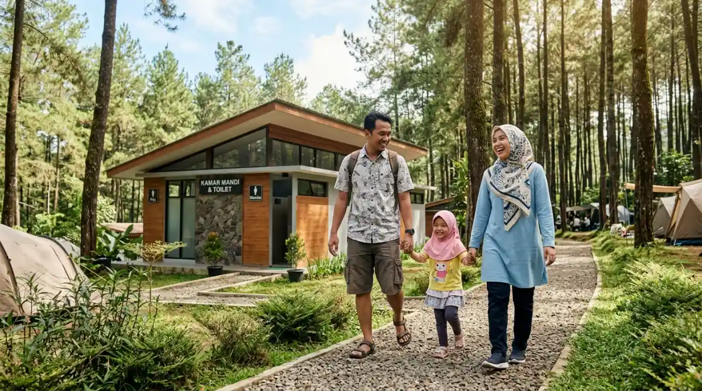
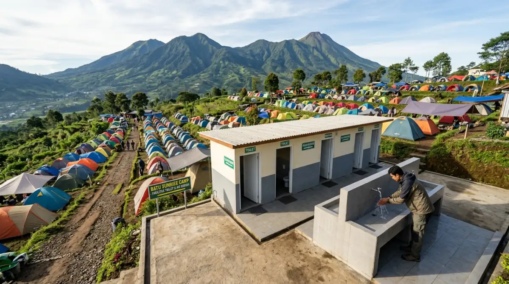

Toilet yang bersih adalah kunci liburan camping nyaman tanpa keluhan.Pernah nggak sih kamu ngebayangin udah capek-capek packing barang segunung, ngajuin cuti yang approval-nya alot banget dari HRD, eh pas sampai lokasi kemah mood langsung hancur berantakan gara-gara urusan kamar mandi? Niatnya mau healing sejenak dari tumpukan revisi klien, malah berujung pusing karena fasilitas toiletnya kotor, bau, dan airnya mampet.
Buat kamu yang bawa anak kecil atau baru pertama kali mau nyobain tidur di tenda, urusan MCK (Mandi, Cuci, Kakus) ini mutlak nggak bisa ditawar. Jangan sampai momen liburan yang harusnya merekatkan bonding keluarga malah jadi ajang penyesalan dan bikin trauma gara-gara urusan "ke belakang" yang menyiksa. Mending pastikan dari awal.
Makanya, sebelum telanjur bayar tiket masuk dan kecewa di tempat, mending kita bahas tuntas rekomendasi camping ground dengan toilet bersih yang bakal bikin liburanmu tetap nyaman dan stress-free.
Kenapa Urusan Toilet Bersih Itu "Koentji" Pas Camping?
Coba bayangkan situasi ini: kamu lagi di kantor, kejar tayang deadline laporan akhir bulan. Tiba-tiba perutmu mules dan kamu harus lari ke toilet. Pas sampai di sana, ternyata airnya mati dan lantainya becek penuh jejak sepatu.
Panik dan kesal, kan? Nah, perasaan chaos itu bakal berkali-kali lipat rasanya kalau kejadiannya di alam bebas. Di kantor, kamu mungkin masih bisa numpang ke toilet lantai sebelah atau lari ke minimarket terdekat. Di tengah hutan pinus? Boro-boro.
Berdasarkan pengalamanku bertahun-tahun keluar masuk area perkemahan, banyak orang yang kapok camping bukan karena digigit nyamuk atau kedinginan, tapi karena krisis air bersih dan sanitasi yang buruk. Toilet yang layak itu ibarat gaji turun tepat waktu di tanggal 25; bikin tenang dan semua urusan jadi lancar.
Apalagi kalau kamu membawa rombongan keluarga. Anak-anak biasanya paling sensitif dengan lingkungan yang kurang higienis. Kalau toiletnya gelap, berbau tajam, dan banyak serangga, dijamin mereka bakal rewel nahan buang air.
Ini jelas nggak sehat. Sebagai seseorang yang sangat menghargai kebersihan, aku selalu menetapkan standar bahwa menyatu dengan alam bukan berarti kita harus kembali ke zaman purba dan mengabaikan kebersihan diri. Mencari camping ground dengan toilet bersih adalah bentuk apresiasi kita terhadap kenyamanan tubuh sendiri.
Kriteria Fasilitas MCK yang Aman Buat Keluarga
Sebelum kita masuk ke daftar rekomendasinya, kita harus samakan persepsi dulu nih. Standar "bersih" di alam bebas tentu agak sedikit berbeda dengan standar toilet hotel bintang lima. Tapi, paling tidak ada beberapa kriteria wajib yang harus dipenuhi oleh pihak pengelola.
Pertama, ketersediaan air yang melimpah dan mengalir 24 jam. Ini harga mati. Sebagus apa pun keramiknya, kalau airnya cuma netes kayak sisa kuota internet di akhir bulan, ya percuma. Kedua, penerangan yang memadai.
Toilet camping sering kali letaknya agak terpisah dari area tenda utama. Kalau malam hari lampunya remang-remang atau mati, suasananya bakal horor banget, mirip lorong arsip kantor yang nggak pernah dibersihkan.
Ketiga, lantai dan kloset yang disikat rutin. Pengelola yang profesional biasanya punya jadwal kebersihan harian yang ketat. Kloset leher angsa yang disiram lancar (baik jongkok maupun duduk) adalah indikator bahwa pengelolanya peduli pada sanitasi pengunjung. Terakhir, jalur menuju toilet dari area camping tidak berupa tanah liat yang licin saat hujan, melainkan sudah dipaving, dikasih bebatuan, atau disemen.
Rekomendasi Pilihan Tempat Kemah Nyaman
Setelah menyeleksi banyak tempat dan melihat langsung bagaimana fasilitas mereka dikelola, aku punya beberapa daftar camping ground yang sangat memanusiakan pengunjungnya, terutama dalam urusan fasilitas kebersihan.
1. Batu Sunrise Camp: View Juara, MCK Bintang Lima
Kalau kamu mencari paket komplit antara pemandangan matahari terbit yang magis dan fasilitas yang bikin tenang, Batu Sunrise Camp ini jawabannya. Lokasinya sangat ideal untuk kegiatan outbound maupun family camp. Yang bikin aku salut sama pengelola di sini adalah dedikasi mereka terhadap kenyamanan pengunjung.
Area toiletnya sangat terawat, bersih, dan jumlah biliknya cukup banyak sehingga kamu nggak perlu antre panjang kayak lagi nunggu absen pagi di kantor. Air yang mengalir langsung dari sumber pegunungan terasa sangat segar. Lantai toiletnya juga dijaga agar tidak berlumut. Buat kamu yang bawa anak kecil, tempat ini sangat recommended karena jarak tempuh dari tenda ke area kamar mandi sudah didesain ramah pejalan kaki.

Fasilitas MCK yang terkelola dengan modern sangat memanusiakan pengunjung.2. Bumi Perkemahan Bedengan: Asri dengan Sanitasi Mumpuni
Bergeser sedikit ke area Malang, ada Bedengan yang terkenal dengan aliran sungai jernihnya di sela-sela pohon pinus. Dulu, tempat ini identik dengan camping semi-liar. Tapi seiring berjalannya waktu dan meningkatnya antusiasme keluarga yang ingin berkemah, pengelola setempat melakukan upgrade besar-besaran pada fasilitas umumnya.
Sekarang, mencari camping ground dengan toilet bersih di kawasan Bedengan bukan lagi hal yang mustahil. Bangunan MCK-nya sudah permanen dan air sungainya dialirkan dengan sangat baik untuk kebutuhan sanitasi. Meskipun letaknya di tengah hutan, kebersihan klosetnya cukup terjaga. Sensasi buang air di pagi hari sambil mendengar gemericik aliran sungai itu rasanya relaxing banget, ampuh buat ngilangin penat mikirin KPI (Key Performance Indicator) kerjaan.
3. Taman Pinus Campervan Park: Praktis dan Modern
Buat kamu yang menganut prinsip "anti-ribet-ribet-club", konsep campervan adalah jalan ninjanya. Di Taman Pinus, kamu bisa memarkir mobil tepat di sebelah tendamu. Konsep taman yang dikelola secara modern ini tentu dibarengi dengan fasilitas MCK yang modern pula.
Toilet di sini didesain dengan estetika yang bagus, menggunakan material yang mudah dibersihkan, dan airnya selalu jernih. Bahkan di beberapa titik, tempat wudhu dan area cuci piring (wastafel) dipisah agar tidak saling mengganggu. Ini detail kecil yang sangat mencerminkan profesionalitas pengelola. Kamu nggak perlu repot jalan jauh menembus gelapnya malam kalau tiba-tiba kebelet pipis jam 2 pagi.
4. Area Semi-Glamping Coban Rais
Jika kamu ingin selangkah lebih maju dalam hal kenyamanan, area sekitar Coban Rais menawarkan beberapa spot yang mengusung tema fun camping atau semi-glamping. Karena target pasarnya adalah keluarga menengah ke atas dan wisatawan kota, standar kebersihan toiletnya sudah mengikuti standar penginapan pada umumnya.
Kamar mandinya wangi, penerangannya terang benderang, dan bahkan beberapa bilik menyediakan fasilitas air hangat. Ya, kamu nggak salah dengar. Mandi air hangat di tengah udara dingin pegunungan itu rasanya seperti dikasih bonus tahunan dua kali lipat sama perusahaan. Sangat menenangkan.
Tips Tambahan Biar Urusan "Ke Belakang" Tetap Nyaman
Meskipun kamu sudah booking di tempat yang punya reputasi toilet bersih, kamu tetap harus membawa "amunisi" pribadi. Anggap saja ini sebagai backup plan alias Rencana B kalau tiba-tiba kondisi di lapangan sedang ramai pengunjung (high season).
- Bawa Toiletries Serba Praktis: Jangan bawa sabun cair botolan besar yang gampang tumpah di tas. Bawalah sabun kertas atau sabun cair dalam botol travel size. Siapkan juga hand sanitizer dan tisu basah antibakteri. Tisu basah ini sangat krusial fungsinya, mulai dari mengelap dudukan kloset (jika menggunakan kloset duduk) hingga membersihkan tangan secara kilat.
- Sandal Jepit Anti-Slip: Ini sering banget dilupakan. Tolong, jangan pergi ke toilet camping menggunakan sepatu gunungmu yang berat itu, atau pakai sneakers putih kesayanganmu. Bawa satu sandal jepit berbahan karet yang grip-nya kuat. Lantai kamar mandi umum bisa jadi licin karena sisa sabun dari pengunjung sebelumnya. Keselamatan itu nomor satu; jangan sampai niatnya mau mandi malah berakhir kepleset dan terkilir.
- Kantong Kresek Kecil (Trash Bag Pribadi): Pengelola yang baik pasti menyediakan tempat sampah, tapi kadang saat akhir pekan tempat sampah itu cepat penuh. Jadilah pengunjung yang bertanggung jawab dengan membawa plastik kecil sendiri untuk membuang bungkus sampo sachet atau tisu bekas pakai. Jangan tinggalkan jejak sampahmu di kamar mandi. Kalau kita ingin fasilitas bersih, kita juga harus berkontribusi menjaganya.
Kesimpulan: Jangan Kompromi Soal Kenyamanan Dasar
Liburan ke alam bebas itu memang tentang keluar dari zona nyaman, menikmati udara segar yang nggak bisa kamu hirup di sela-sela kemacetan ibukota, dan belajar beradaptasi. Tapi, beradaptasi bukan berarti kamu harus menyiksa diri dan menahan segala kebutuhan biologis dasar cuma karena salah pilih lokasi.
Waktu liburanmu bareng keluarga itu sangat berharga. Sangat disayangkan kalau momen langka ini rusak dan meninggalkan memori buruk hanya karena kamu tergiur harga murah tapi mengabaikan fasilitas sanitasi. Menyesal belakangan karena anak rewel minta pulang akibat toilet mampet itu rasanya lebih berat daripada ngerjain revisi dari bos di hari Minggu.
Jadi, persiapkan semuanya dengan matang. Lakukan riset kecil, baca review, dan pilihlah camping ground dengan toilet bersih yang sudah terbukti kredibilitasnya. Dengan begitu, kamu bisa tidur nyenyak di dalam tenda, dan pulang kembali ke rutinitas dengan pikiran yang benar-benar fresh. Selamat merencanakan liburan, dan selamat berkemah!
FAQ